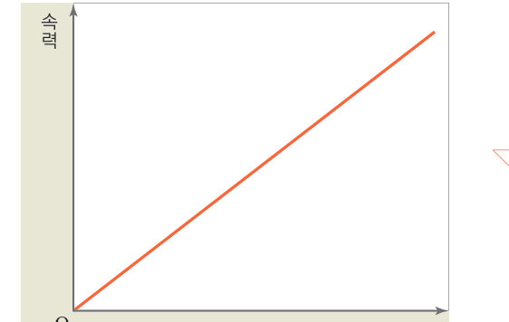
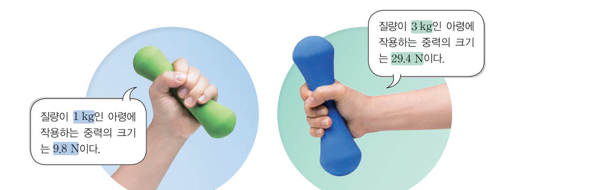

살아있는 교과서 · Ⅳ. 운동과 에너지 · 1. 등속 운동과 자유 낙하 운동 · 03 106~111쪽
자유 낙하 하는 물체의 운동
번지 점프를 할 때 떨어질수록 속력은 어떻게 될까? 가상 색 띠를 잘라 세워 자유 낙하 운동의 속력 변화를 그래프로 확인하고, 진공 낙하 장치로 공과 깃털을 지구와 달에서 떨어뜨려 보자.
🎯 이 단원을 배우면 — 자유 낙하 하는 물체의 운동을 분석하고, 속력 변화를 설명할 수 있다.
해 보기자유 낙하 운동 분석하기 106쪽
106쪽번지 점프를 할 때 떨어질수록 속력은 어떻게 될까?
높은 곳에서 물체를 가만히 놓으면 아래로 떨어지는데, 공기 저항이 없을 때 이러한 운동을 자유 낙하 운동이라고 한다. 다음 활동으로 자유 낙하 하는 물체의 속력은 어떻게 변하는지 알아보자.
106쪽자유 낙하 하는 공의 위치를 색 띠에 표시하고, 구간마다 잘라 그래프에 순서대로 세워서 붙인다.
가상 색 띠0.1 초마다 찍은 공의 위치를 잘라 세워 보자
1구간 ①~⑤의 길이(같은 시간 동안 이동한 거리)는 순서대로 . 띠를 세운 그래프의 꼭대기를 이으면 모양이 된다.
교과서자유 낙하 하는 물체의 속력은 어떻게 변할까? 107쪽
자유 낙하 하는 물체는 같은 시간 동안 이동한 구간 거리가 시간에 따라 일정하게 커진다. 물체 사이의 시간 간격이 일정할 때 물체가 이동한 거리는 속력을 뜻하므로, 자유 낙하 하는 물체는 그림 3-4와 같이 속력이 일정하게 커진다는 것을 알 수 있다. 즉, 자유 낙하 운동에서는 시간에 따른 속력 변화가 일정하다.
자유 낙하 하는 물체가 시간에 따라 속력이 일정하게 커지는 것은 물체가 낙하하는 동안 아래 방향으로 일정한 크기의 중력을 계속 받기 때문이다. 번지 점프나 스카이다이빙을 할 때 공기 저항이 없다면 사람에게 중력만 작용하여 시간에 따라 속력이 일정하게 빨라지는 자유 낙하 운동을 한다.

그림 3-4자유 낙하 운동의 시간-속력 그래프그림 3-5스카이다이빙
두 그래프 겹쳐 보기등속 운동과 자유 낙하 운동
1자유 낙하 운동의 시간-속력 그래프는 이고, 등속 운동의 시간-속력 그래프는 이다.
탐구 수행질량이 다른 물체가 자유 낙하 할 때의 속력 변화 비교 108~109쪽
108쪽진공 낙하 실험 장치
공기 중에서 공과 깃털을 같은 높이에서 동시에 떨어뜨리면 공이 먼저 바닥에 도달한다. 진공에서 공과 깃털이 자유 낙하 할 때에는 속력이 어떻게 변하는지 비교해 보자.
예상 진공에서 질량이 서로 다른 공과 깃털이 자유 낙하 할 때 바닥에 먼저 도달하는 물체는 어느 것인지 예상한다.
탐구 수행 진공 낙하 실험 장치를 뒤집어 세우면서 공과 깃털이 동시에 낙하하는 장면을 동영상으로 촬영한다.
촬영한 영상을 관찰하여 바닥에 도달할 때의 공과 깃털의 모습을 비교한다.
💬예상 진공에서 공과 깃털 중 바닥에 먼저 도달하는 것은 무엇일까?
가상 진공 낙하 장치공기를 빼고 뒤집어 보자
1정리하기 진공에서 공과 깃털이 같은 높이에서 동시에 자유 낙하 하면 바닥에 도달한다. 자유 낙하 하는 물체는 질량과 관계없이 속력이 빨라지는 정도가 .
평가 기준
스스로 평가
탐구 기능 실험 결과가 잘 나타나도록 탐구를 수행하였는가?
탐구 기능 실험 결과를 근거로 하여 결론을 도출하였는가?
인성 모둠 구성원과 협력하며 활동하였는가?
🔌 아두이노로 직접 재 보자! 초음파 센서로 수평면의 자동차와 빗면의 수레를 기록해 등속 운동과 빨라지는 운동을 비교하는 아두이노 실험 보고서
교과서중력 가속도와 중력의 크기 109쪽
지표면 근처에서 자유 낙하 하는 모든 물체는 1 초에 약 9.8 m/s씩 속력이 빨라진다. 이렇게 속력이 일정하게 빨라지는 것은 물체에 중력이 작용하기 때문이다. 물체에 작용하는 중력의 크기는 무게와 같으며 무게는 질량에 비례하므로, 중력의 크기(N)는 물체가 자유 낙하 할 때의 속력 변화량인 9.8에 질량(kg)을 곱하여 구한다. 중력의 크기 = 9.8 × 질량 (9.8: 중력 가속도 상수)

그림 3-6물체에 작용하는 중력의 크기 — 질량이 1 kg인 아령: 9.8 N, 질량이 3 kg인 아령: 29.4 N
1질량이 3 kg인 아령에 작용하는 중력의 크기는 N이다. 무게가 9.8 N, 29.4 N인 두 물체가 동시에 자유 낙하 하면 1 초 뒤 속력은 모두 m/s로 같다.
🧩 두 번째 열쇠 (109쪽)
자이로 드롭이 떨어질 때에는 중력이 작용하여 시간에 따라 속력이 일정하게 빨라지는 ( ) 운동을 한다.
🔑열쇠 모으기 자이로 드롭이 올라갈 때와 떨어질 때의 운동은 어떻게 다를까? '속력, 등속, 중력, 자유 낙하'를 사용하여 설명해 보자.
스스로 확인하기106쪽 학습 목표를 달성했는지 확인해 보자 109쪽
1자유 낙하 하는 물체는 속력이 운동을 한다.
2지표면 근처에서 자유 낙하 하는 모든 물체는 1 초에 약 m/s씩 속력이 빨라진다.
3과학적 사고력 지구와 달에서 동일한 물체가 같은 높이에서 각각 자유 낙하 하면 속력이 어떻게 변하는지 비교하여 설명해 보자.
개념 확인자유 낙하 하는 물체의 운동
1자유 낙하 하는 물체는 시간에 따라 속력이 일정하게 운동을 한다.
(가) 간격 일정 · (나) 간격이 점점 좁아짐 · (다) 간격이 점점 넓어짐 / 시간-속력 그래프: A 원점에서 증가 · B 일정 · C 감소
2자유 낙하 운동을 연속으로 기록한 자료는 이고, 시간-속력 그래프는 이다.
3지표면 근처에서 자유 낙하 하는 물체는 1 초에 속력이 m/s씩 빨라진다.
4자유 낙하 하는 물체가 속력이 일정하게 빨라지는 까닭은 지구 중심 방향으로 이 계속 작용하기 때문이다.
5진공 상태에서 공과 깃털을 자유 낙하 시키면 . 이때 공과 깃털에 작용하는 힘은 이다.
7질량이 10 kg인 물체에 작용하는 중력의 크기는 N이다.
스스로 정리하기자유 낙하 하는 물체의 운동 111쪽
3자유 낙하 운동
⑴ : 공기 저항이 없을 때 물체를 가만히 놓아 물체가 아래로 떨어지는 운동 — 아래 방향으로 을 받으며 운동한다. ⑵ 일정한 시간 간격으로 찍은 연속 사진에서 같은 시간 동안 이동한 거리는 점점 . ⑶ 질량이 다른 두 물체가 자유 낙하 할 때 속력 변화가 같고, 1 초마다 약 9.8 m/s씩 빨라진다.
✔옳으면 O, 옳지 않으면 X
⑴ 중력을 받으면서 운동한다.
⑵ 1 초마다 약 9.8 m/s씩 속력이 빨라진다.
⑶ 질량이 다른 두 물체가 같은 높이에서 동시에 자유 낙하 하면 질량이 큰 물체가 바닥에 먼저 도달한다.
평가 기준
스스로 평가
자유 낙하 하는 물체의 운동을 분석할 수 있다.
자유 낙하 하는 물체의 속력 변화를 설명할 수 있다.
제출학생 정보 · 제출하기
모든 활동을 마친 뒤 제출하면 전체가 한 번에 채점되고 피드백이 나타나요. 답안은 선생님 스프레드시트(중3 탭)에 기록돼요.